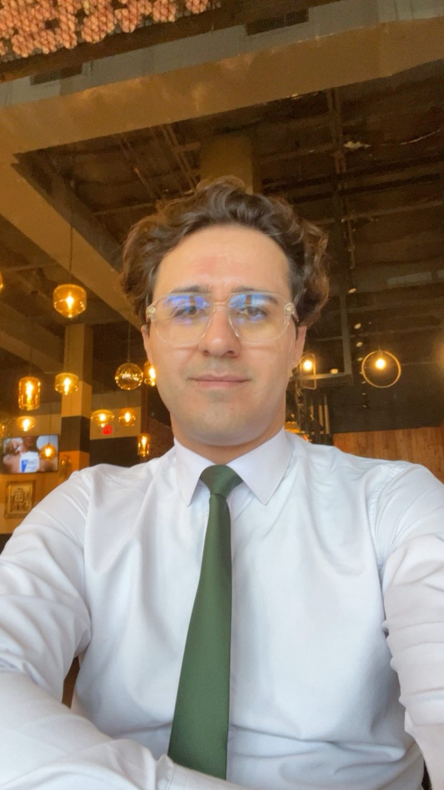
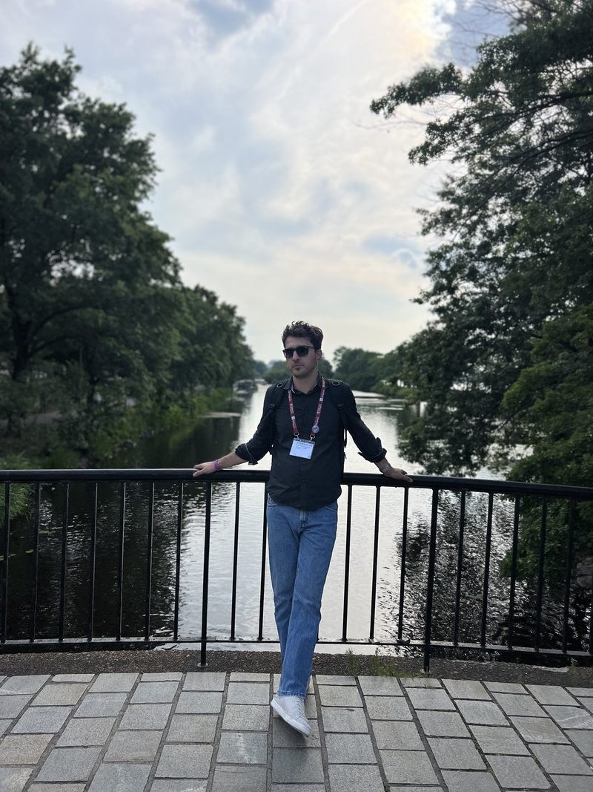
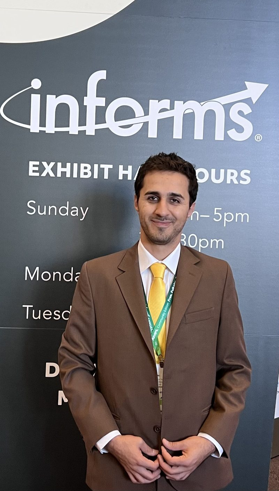

AmirsalarJafariGorizi
Management scholar and teacher. I study how organizations change when they make commitments to the people around them.


Organizations, strategy, and the world they sit in
I am a PhD candidate in Organization, Strategy, and International Management at the University of Texas at Dallas.
My research sits where organization theory, strategy, and international management meet. I look at firms as they go through digital transformation and chase sustainability goals, and at what happens when they make promises to employees, to local communities, and to society at large.

Twenty-plus conferences, forty-plus reviews, seven papers
I have presented at more than twenty conferences, including the Academy of Management, the Strategic Management Society, INFORMS, the Decision Sciences Institute, and ICIS. Two of my papers have won or been nominated for best student paper awards.
I also love teaching. I was instructor of record for International Business at UT Dallas and bring industry guests into the classroom whenever I can.